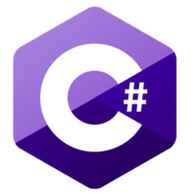

#1 객체지향의 시작 클래스(class)
[학습 목표]
- 객체 지향 프로그래밍에 대한 이해.
- 클래스(class) 문법을 이용한 "객체의 틀"을 제작하는 방법에 대한 숙지
- new 연산자를 이용해 객체를 생성하는 방법에 대한 숙지
- 인스턴스화, 인스턴스의 용어의 의미에 대한 이해
[목차]
- 객체 지향 프로그래밍(OOP)
- 클래스(Class)
- new 연산자
- 인스턴스화 & 인스턴스
* 개인적인 공부 기록용으로 작성한 글이기에, 잘못 된 내용이 있을 수 있습니다.
#1 객체 지향 프로그래밍(OOP)
컴퓨터 프로그래밍을 하기 위해 사용하는 언어는 절차 지향 언어와, 객체 지향 언어로 구분됩니다.
초기에는 대부분 절차 지향 방식으로 프로그램들을 구성했으나, 프로그램이 커지면서, 더 이상 절차지향 방식으로 프로그래밍을 하는 것이 힘들어 졌습니다. 이에 대한 해결책으로 객체 지향 프로그래밍이 등장했습니다.
객체 지향 프로그래밍이란, 현실세계의 상호작용을 프로그래밍으로 그대로 구현한 것인데, 말로만 들으면 이해가 가지 않을 수 있으니 예시를 통해 알아 보도록 하겠습니다.
객체는 기본적으로 속성과 기능을 지니고 있습니다.
예를 들어 RPG게임을 플레이하는 한 플레이어가 있다고 가정해 볼 때 속성으로는, hp, atk(공격력) .. 등이 있을 수 있고 기능으로는 attack(공격), move(이동) 등이 있을 수 있습니다. 이 것을 모델로 하여 직접 객체를 제작해 보도록 합시다.
#2 클래스(Class)
클래스란, "객체의 틀"을 만드는 문법입니다. class 뒤에 클래스의 이름을 명시하고, 괄호({ }) 안에 객체 틀의 정보를 입력합니다.
class Player
{
}"객체의 틀"을 이용해서 "객체"를 찍어 낼 수 있습니다. 흔히 붕어빵 틀과 붕어빵을 예시로 들고는 합니다.
제작한 객체의 틀(붕어빵 틀)을 사용해 객체(붕어빵)을 원하는 만큼 찍어내는 것이지요.
이제, 객체의 틀 안에 속성을 정의해 보도록 합시다.
class Player
{
public int hp;
public int atk;
}앞에서 말한 모델과 동일하게 제작하도록 하겠습니다. hp,atk(공격력) 변수를 정의합니다. 앞의 public은 접근 지정자 라는 것인데 public 없이 int자료형만 선언하면, Player 클래스 안에서만 사용하겠다는 의미가 됩니다. 접근 지정자에 대해서는 추 후에 자세하게 정리할 예정이니 이정도만 알고 넘어가셔도 됩니다. 다음으로 기능(함수)들을 정의해 보도록 하겠습니다.
class Player
{
public int hp;
public int atk;
public void attack()
{
Console.WriteLine("Player Attack!");
}
public void Move()
{
Console.WriteLine("Player Move!");
}
}Player 객체 틀이 완성됐습니다. 이제 제작한 Player 객체 틀을 이용해 객체를 생성해 보도록 합시다.
#3 new 연산자
new 연산자는 프로그래머가 직접 제작한 객체의 틀을 이용해서 객체를 찍어내는 역할을 하는 연산자입니다.
사용 방식은 다음과 같습니다.
클래스이름 객체이름 = new 클래스이름();앞서 예시로 든 Player 객체 틀을 이용해 player 객체를 생성한다고 하면 다음과 같이 선언하면 됩니다.
Player player = new Player();이제 객체를 생성했으니, 객체를 사용해 보도록 합시다. 객체의 속성과 기능들은 (.)을 통해서 접근이 가능합니다.
player.hp = 100;
player.atk = 10;
player.Move();
player.attack();이렇게, 객체의 속성들을 (.)을 이용해서 값을 넣어줄 수도 있고, 기능들을 (.)을 이용해서 사용할 수도 있습니다.
작성한 소스코드를 실행해 보도록 하겠습니다.
[전체 코드]
using System;
namespace TextRpg
{
class Player
{
public int hp;
public int atk;
public void attack()
{
Console.WriteLine("Player Attack!");
}
public void Move()
{
Console.WriteLine("Player Move!");
}
}
class Program
{
static void Main(string[] args)
{
Player player = new Player();
player.hp = 100;
player.atk = 10;
player.Move();
player.attack();
}
}
}[실행결과]
Player Move!
Player Attack!#4 인스턴스화 & 인스턴스
인스턴스화 : 클래스로 부터 객체를 찍어내는 과정을 의미하는 용어
인스턴스 : 특정 클래스로 부터 찍어낸 객체를 해당하는 클래스의 인스턴스라고 부른다.
예를들어 Player mage = new Player(); 와 같은 소스 코드가 있다고 가정해 보겠습니다.
이 때 mage 객체를 찍어내는 과정을 "인스턴스화" 라고 부르며, mage 객체를 Player 클래스의 "인스턴스" 라고 부릅니다.
그런데 왜 굳이 객체라는 말을 두고 인스턴스라는 새로운 용어를 사용하는 것 일까요?
그 이유는 특정한 객체 (mage) 가 특정 클래스 (Player)의 객체라는 것을 강조하는 구체적인 의미를 갖도록 하기 위함입니다.
객체 mage 라고 부르는 것 보다, Player 의 mage 인스턴스 라고 부르는 것이 객체의 관계를 표현 하는 데 직관적이기 때문이죠.
* 2021.07.22 인스턴스화 & 인스턴스 관련 내용 추가